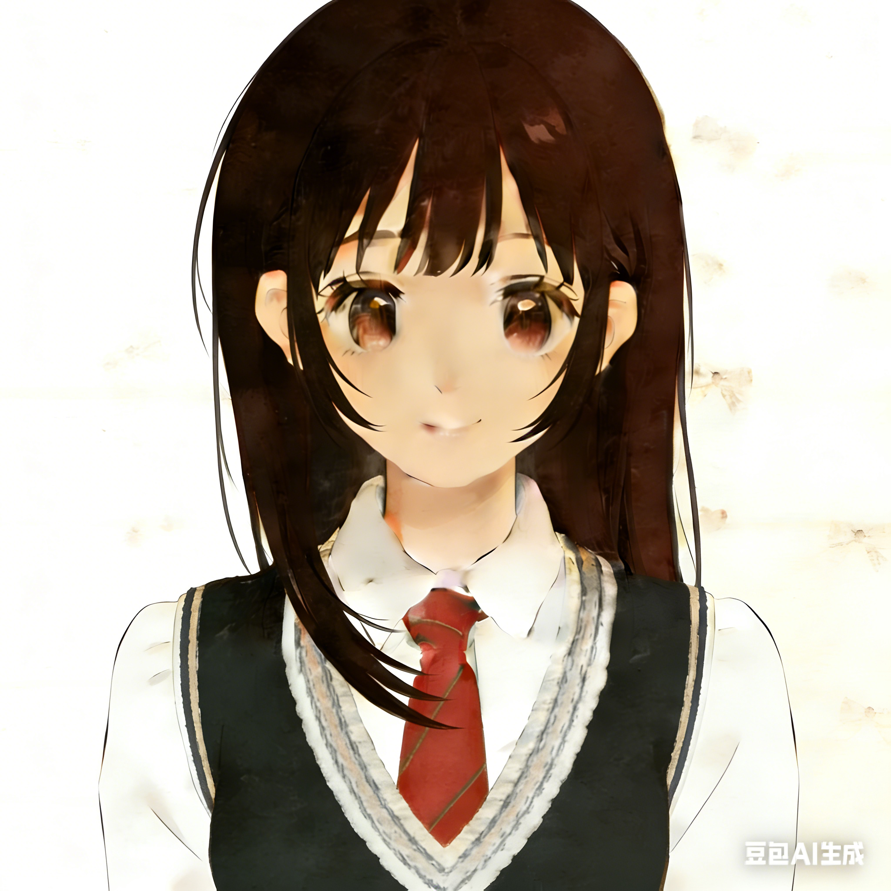

Lesley Zhuo
探索者 · 研究者 · 实践者
从3岁开始，在黑白键的跳跃中培养对美的敏锐感知。
通过内容创作和社群运营，将个人想法传递给更多人。
跨越山海的旅行，打破思维边界探索可能性。
刚刚步入求是园，我感觉万分欣喜。但很快这份喜悦褪去，大学独特的教学方式和枯燥的专业课，让我逐渐对本专业失去了信心。每当听闻就业形势严峻的消息，懵懂的我也开始苦恼。好在我依然拥有探索的热情和独立思考的能力，开始寻找属于自己的路。
不满足于现状的我，开始主动求变，向更高处挑战。短短2个月内，我独自战斗，一举以半奖拿下NTU Information Engineering and Media专业offer。回想当时一手汇总信息、一手准备IELTS和AST考试、一手写文书的时光，仍感到青春的热血沸腾。
在等待Offer的半年内，我换了个角度看待浙大带给我的磨练。也许本专业不适合我，但辅修社会学正中我下怀；也许农学就业严峻，但和市场营销学等学科交叉融合，却表现出很多新的可能。
适应了ZJU生活的我，加入了一系列教授团队，参与跨越社会学、传媒、市场营销学等多学科的科研与竞赛项目；同时对本专业也多了耐心，获得浙江大学学业优秀标兵、浙江大学三等奖学金等难能可贵的奖项。
浙江省教育厅一般科研项目
浙江大学社会学系 2025 年“返乡调研”项目
浙江大学第十八届“蒲公英”大学生创新大赛金奖
浙江大学2025年“启真问学”科研项目
丽水市骏腾汽车销售服务有限公司
上海教育电视台
温州市新闻传媒中心
未来，拥有一只大金毛。
在属于自己的小世界里，享受生活的美好时刻。